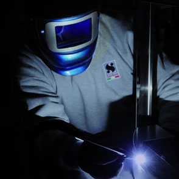
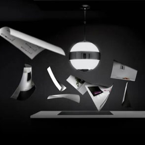
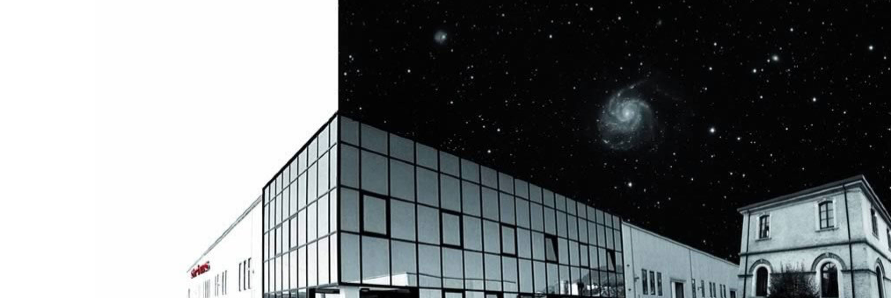

<!--#set var="title" value="Познакомьтесь с Sirius" -->
<!--#set var="page" value="about" -->
<!--#include file="_header.shtml"-->

		<main class="main">

			<article>

				<div class="img-cover">

					<div class="center">

						<h1 class="h1">Познакомьтесь с Sirius</h1>

					</div>

				</div>

				<div class="breadcrumbs">

					<ul class="center clr">
						<li><a href="/">Главная</a></li>
						<li>Познакомьтесь с Sirius</li>
					</ul>

				</div>

				<div class="block-text1 center">

					<h2 class="h2">Sirius - просто вытяжки!</h2>

					<p>С 1996 года вытяжки Sirius лидируют на рынке вытяжек, поэтому многие бренды отказались от собственных производств, и заказывают изготовление вытяжек на заводах Sirius.</p>

				</div>

				<div class="center">

					<ul class="block-col-2">
						<li>
							
							<h3 class="h3">Гарантия</h3>
							<p>Наша техника — результат работы лучших умов, и мы предоставляем гарантию на нее от двух до пяти лет. Поверьте, она прослужит вам гораздо дольше.</p>
						</li>
						<li>
							
							<h3 class="h3">Сервис</h3>
							<p>Подобрать лучшие варианты для вашего дома и бизнеса помогут обученые консультанты нашей компании. Если техника по какой-то причине вам не подошла, просто верните ее обратно в течение 14 дней.</p>
						</li>
					</ul>

					

					<div class="block-col-2 align-justify">

						<div class="block-col-2__item">

							<p>Кухонная вытяжка – очень простой прибор, по большому счету это двигатель и корпус, ничего более.</p>
							<p>Но.</p>
							<p>Подберите для двигателя самые надежные материалы, соберите его вручную из деталей, изготовленных лазером с микроскопической точностью, проведите множество испытаний перед запуском в серийное производство, чтобы получить практически бесшумный, но невероятно мощный двигатель, который прослужит долгие годы.</p>
							<p>Пригласите итальянских дизайнеров, которые свыше 20 лет не просто проектируют корпуса вытяжек, а создают подлинные произведения искусства из нержавеющей стали и закаленного стекла, неизменно занимающие призовые места на известнейших мировых выставках. </p>

						</div>

						<div class="block-col-2__item">

							<p>Пригласите для ручной сборки опытных итальянских инженеров, влюбленных в свое дело со всей страстью жаркой Италии, не просто собирающих, но и тщательно тестирующих каждое изделие. <br>И тогда вы получите Sirius – вытяжки, дизайну и качеству которых нет равных в мире.</p>
							<p>Вытяжки Sirius собираются исключительно в Италии, в городе Sassoferrato. Свыше 90% продукции идет на экспорт, расходясь по всему миру благодаря широкой сети представительств, обеспечивающих не только продажу, но и сервисное и гарантийное обслуживание высочайшего качества. <br> С 1996 года вытяжки Sirius лидируют на рынке вытяжек, поэтому многие бренды отказались от собственных производств, и заказывают изготовление вытяжек на заводах Sirius. </p>

						</div>

					</div>

				</div>

			</article>

		</main>

<!--#include file="_footer.shtml"-->